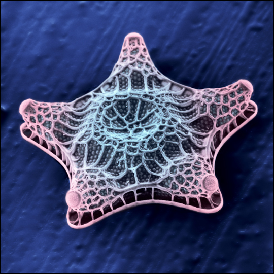

Daily, more and more lab scientists are turning to High Throughput Sequencing (HTS) for a rapid, deep way to analyse their environment of study. Where metagenomics has been pioneered in prokaryotic systems, eukaryotic environments have only recently become accessible using these tools and the frequency at which they are being utilised is greatly increasing.
Despite this, there is a very distinct learning curve for non-bioinformaticians who either don't have the time, or do not wish to learn the techniques employed in translating the data which returns from a sequencing facility into workable, biologically relevant information. Here, we present PROMpT a web interactive interface for powering simple metagenomic analysis of barcoding data.
Utilising data-reduction, the cannonical BLAST tool and bespoke perl and R scripts, a raw sequence file can be turned into informative pie-charts, heatmaps and other statistical outputs in a minimum of mouse clicks.
 ;
;
What do you want to do?
Perform a new analysis
View completed analysis
